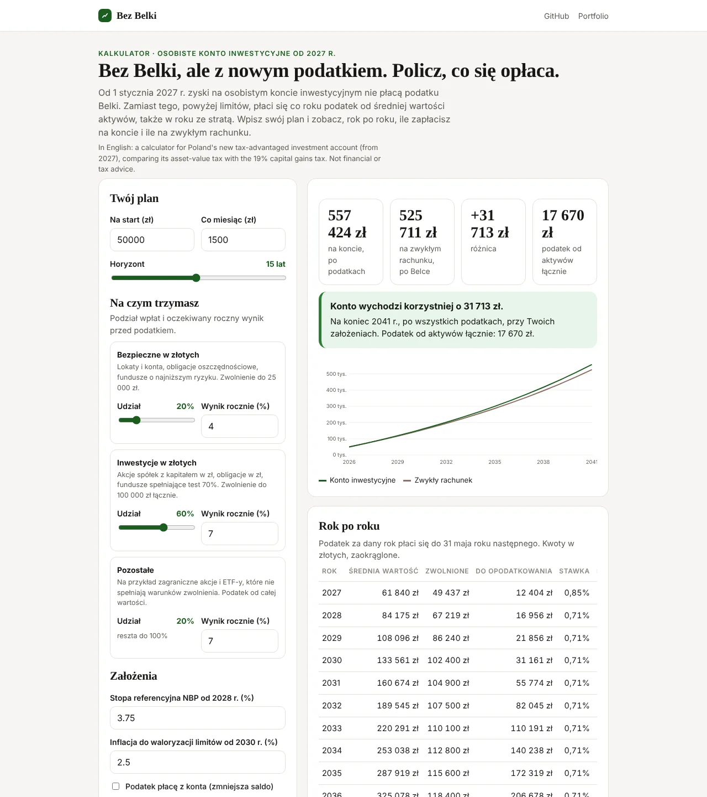

The problem
Articles about the new account show one or two examples. People need to see what the rules mean for their own amounts, assets and horizon, including the year they lose money.

What it does
- Your plan: start, monthly amount, horizon, three asset groups with expected returns.
- The act applied: 25,000 zł limit first, 100,000 zł total, 0.85% in 2027, then 19% of the NBP rate.
- Year-by-year table and a chart against a regular account.
- Loss-year verdict and sources with article numbers.
Findings and decisions
Derived from the act
Above the limit, the break-even return is the NBP reference rate
From 2028 the rate is 19% of the reference rate, and Belka is 19% of the return, so on money above the limit they match when the return equals the reference rate: about 3.74% at 3.75%.
Checked by hand
The calculator matches the act on a simple case
300,000 zł of qualifying PLN investments with no growth in 2027 gives 1,707 zł of tax, as the act implies.
What I would do next
- Add IKE and IKZE to the comparison.
- Exact timing when tax is paid from the account.
- Update the rate each November.